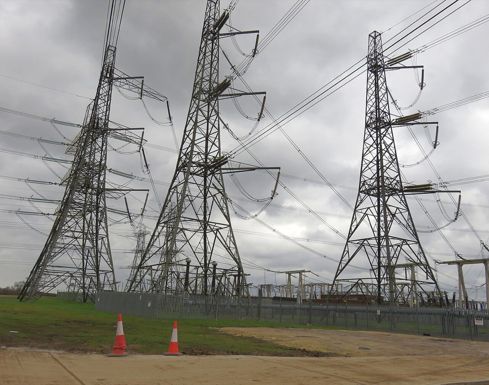
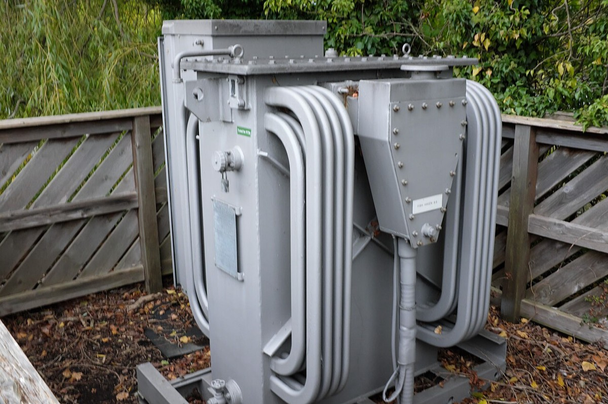
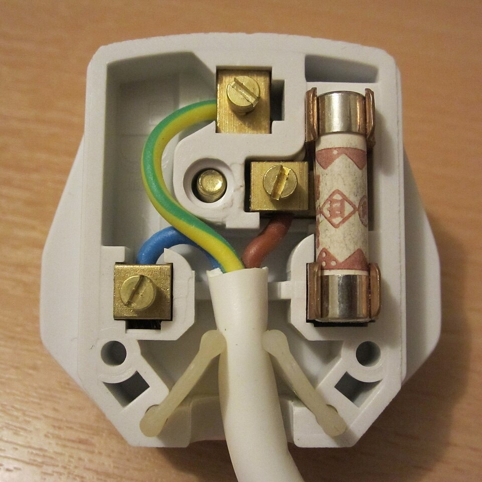

Year 10 physics, AQA GCSE electricity
Follow the charge.
Track the energy.
Circuits, current, p.d., resistance, power, mains
Same current
all the way round.
AQA 6.2 (Trilogy), 4.2 (Physics)
Eight missions.
Build & measure
Loops, symbols, ammeter
Charge on the move
Current, Q = I t
Energy per coulomb
p.d., E = Q V, voltmeter
Resistance &
V = IR
Ohm’s law, RP: wire length
Series & parallel
The rules, Rtotal
I–V characteristics
Lamp, diode, sensors, RP
Power & the Grid
P = V I, E = P t, transformers
Mains & safety
ac, 230 V, earth wire
01 Mission 1: Wire it like a physicist
Build & measure
No complete loop, no current
01 What a circuit needs
A complete loop
- A source of energy: cell or battery
- A closed loop of conducting wire
- Wires are already full of charge
- Close the switch → all the charge moves at once
- A gap anywhere → no current everywhere
01 Learn to draw all of these
Circuit symbols
01 Anyone can build it
Draw it properly
- Pencil and ruler
- Straight wires, right-angle corners
- No gaps: every wire joins at both ends
- Wire goes into each symbol
- Label values: 6 V, 10 Ω
01 Measuring current
Ammeter in series
- Current in amperes (A)
- Ammeter in the same loop as the component
- Same charge flows through both
- Ideal ammeter: almost zero resistance
02 Mission 2: Measure the flow
Charge on the move
Current = charge per second
02 Current
A rate of flow
- Current = rate of flow of charge
- Charge Q in coulombs (C)
- Current I in amperes (A)
- 1 A = 1 C passing a point each second
- In metals: free electrons move
- Needs a closed loop + a p.d.
02 Know and apply
Charge flow
- Convert
- t = 3.0 × 60 = 180 s
- Substitute
- Q = 0.40 × 180
- Answer
- Q = 72 C
- Rearrange
- t = Q ÷ I = 5400 ÷ 1.2
- Answer
- 4500 s = 75 min
02 Which way?
Two directions
- Electrons: − terminal → + terminal
- Conventional current: + → −
- Circuit arrows use conventional current
- Same current, opposite arrows
02 Common mistake
Current is not used up
- One loop → same current everywhere
- Charge is conserved: it goes round
- Components take energy, not charge
“The lamp uses up some current.”
The lamp transfers energy. Current stays the same.
01–02 Checkpoint
Quick check
145 C flows in 30 s. Current?
20.25 A for 2.0 min. Charge?
3Ammeter: series or parallel?
4Which way do electrons flow?
5Ammeters before and after a lamp?
6Switch opened. Current?
03 Mission 3: Follow the energy
Energy per coulomb
1 V = 1 J per coulomb
03 Know and apply
Potential difference
- p.d. = energy transferred per coulomb
- Measured in volts (V)
- 6 V across a resistor → 6 J per C
- Charge
- Q = I t = 0.50 × 40 = 20 C
- Equation
- E = Q V
- Substitute
- E = 20 × 12
- Answer
- E = 240 J
03 Measuring p.d.
Voltmeter across
- p.d. is between two points
- Voltmeter in parallel, across the part
- Very high resistance
- Both leads on one wire → about 0 V
“The voltage at the resistor.”
“The p.d. across the resistor.”
03 Source and load
Energy in. Energy out.
- Source (battery): energy to the charge
- Load (lamp, resistor): energy from the charge
- Series: component p.d.s add up to the supply
- 6 J supplied = 3 J + 3 J transferred
04 Mission 4: Control the current
Resistance & V = IR
More resistance, less current
04 Know and apply
p.d. = current × resistance
- R = V ÷ I and I = V ÷ R
- Same p.d., double R → half the current
- mA ÷ 1000 → A
- Substitute
- V = 0.20 × 15
- Answer
- V = 3.0 V
- Convert
- 250 mA = 0.25 A
- Answer
- R = 6.0 ÷ 0.25 = 24 Ω
04 Ohm’s law
Ohmic conductors
- I directly proportional to V
- Only at constant temperature
- Straight line through the origin
- Resistance stays constant
04 Inside the metal
Why metals resist
- Electrons collide with metal ions
- Collisions oppose the current
- Energy transferred → wire heats up
- Hotter → ions vibrate more → more collisions
- So R increases with temperature
04 The standard circuit
Measure R
- Ammeter in series
- Voltmeter across the component
- Variable resistor → change I
- Record V and I for several pairs
- R = V ÷ I, then a mean or a graph
RP Resistance: Part A
Length of a wire
- IV: length / cm
- DV: resistance / Ω
- Control: material, diameter, temperature
- 10 → 100 cm, in steps
- Read V and I
- R = V ÷ I
- Switch off between readings
RP Results and evaluation
R length
- Straight line through origin → R L
- Longer wire → more collisions
- Wire heats → R rises → keep current small
- Measure to the same contact point of the clip
“Human error.”
“The wire heated up, so R increased.”
03–04 Checkpoint
Quick check
15.0 C through a 12 V lamp. Energy?
269 000 J, 300 C. p.d.?
3How is a voltmeter connected?
46.0 V, 0.30 A. Resistance?
5Wire length doubles. Resistance?
6Why switch off between readings?
05 Mission 5: Crack any network
Series & parallel
Parallel: same p.d., currents add
05 One path
Series rules
- Same current through every part
- Supply p.d. shared between parts
- Bigger R → bigger share of p.d.
05 More than one path
Parallel rules
- Same p.d. across each branch
- Branch currents add up to the total
- Smaller R → bigger branch current
- Rtotal less than the smallest resistor
RP Resistance: Part B
Another path, less R
- Series: add a resistor → Rtotal up
- Parallel: add a branch → more paths
- More current at the same p.d.
- So Rtotal = V ÷ I goes down
| Series | 20 Ω |
|---|---|
| Parallel | 5 Ω |
05 Worked example
Find the lamp’s R
- Current
- I = 6.0 ÷ 10 = 0.60 A
- Lamp p.d.
- 9.0 − 6.0 = 3.0 V
- Same I
- 0.60 A in series
- Answer
- R = 3.0 ÷ 0.60 = 5.0 Ω
05 Checkpoint
Quick check
15 Ω and 15 Ω in series. Rtotal?
2Series: 12 V supply, one part has 5 V?
3Branches: 0.4 A and 0.6 A. Supply current?
4p.d. across each parallel branch?
5Add a resistor in parallel. Rtotal?
66.0 V, 0.20 A, R₁ = 15 Ω. R₂ in series?
06 Mission 6: A component’s fingerprint
I–V characteristics
Curved graph, changing R
06 Reading the graph
Current against p.d.
- p.d. on x, current on y
- Negative values: supply reversed
- Straight through origin → ohmic
- Curve → R changes
06 Non-ohmic
Lamp & diode
Filament lamp
- More current → filament hotter
- Hotter → R increases
- Graph gets less steep
Diode (and LED)
- Current in one direction only
- Very high R in reverse
- Forward: a diode conducts above ~0.6 V (an LED needs more)
06 Components that sense
Thermistor & LDR
Thermistor
- Temperature ↑ → R ↓
- Thermostats, fire alarms
Light-dependent resistor
- Light intensity ↑ → R ↓
- Streetlights, night lights
06 On the bench
What they look like


06 Sensor circuit
Brighter → more current
- Light gets brighter
- LDR resistance decreases
- Total resistance decreases
- I = V ÷ R → current increases
Dark: 6.0 ÷ 1500 Ω = 0.0040 A
RP I–V characteristics
Test each component
- Build the circuit
- Change the p.d. with the variable resistor
- Record V and I for several values
- Reverse the supply, then repeat
- Plot I against V
- Repeat: resistor, lamp, diode
RP Get the negative half
Reverse & read
06 Checkpoint
Quick check
1Straight line through the origin?
2Why does the lamp graph curve?
3Diode in reverse?
4Thermistor gets hotter. R?
5Sensor for a streetlight?
6Why reverse the supply?
07 Mission 7: Count the joules
Power & the National Grid
Power = energy per second
- 1 W = 1 J per second
- 1 kW = 1000 W
07 Know and apply
Two power equations
07 Know and apply
Energy transferred
- Kettle → thermal store of water
- Fan motor → kinetic energy
- Charger → chemical store of battery
- Convert
- P = 2000 W, t = 180 s
- Equation
- E = P t
- Substitute
- E = 2000 × 180
- Answer
- E = 360 000 J
07 Power station to home
The National Grid
- Cables + transformers
- Step-up: p.d. up for transmission
- High p.d. → small current
- Small current → less heating in cables
- Step-down: p.d. down for homes
07 Spot it outside
The Grid, for real


07 Higher tier
Transformer equation HT
- Rearrange
- Is = Vp Ip ÷ Vs
- Substitute
- 25 000 × 400 ÷ 400 000
- Answer
- Is = 25 A
07 Checkpoint
Quick check
112 V headlamp, 5.0 A. Power?
23.0 A through 20 Ω. Power?
39.0 kW shower for 8.0 min. Energy?
4Current doubles, same R. Power?
5Why transmit at high p.d.?
6Job of a step-down transformer?
08 Mission 8: Stay safe at 230 V
Mains & safety
Switched off ≠ safe
08 Two kinds of supply
dc vs ac
- dc: one direction only (cells, batteries)
- ac: keeps reversing direction
- UK mains is ac
08 Three-core cable
Three wires, three jobs
| Wire | Colour | Job |
|---|---|---|
| Live | Brown | Carries the alternating p.d. |
| Neutral | Blue | Completes the circuit, ≈ 0 V |
| Earth | Green + yellow | Safety wire at 0 V; current only in a fault |
08 Find the three wires
Inside a UK plug

- EarthGreen + yellow, to the top pin
- NeutralBlue, to the bottom left pin
- LiveBrown, to the fuse, then the bottom right pin
08 Staying safe
Why live is dangerous
- Body at 0 V, live at 230 V
- Touch live → current through you: shock
- Still live with the switch off
- Live–earth link → huge current, fire risk
- Metal case is earthed: fault current → earth
“The earth wire is at 230 V.”
Earth is at 0 V.
08 Checkpoint
Quick check
1UK mains supply?
2What colour is the live wire?
3p.d. between live and earth?
4Which wire carries current only in a fault?
5Switch off. Is the live wire safe?
6Does neutral carry current normally?
Learn to use these
Equation toolkit
Summary